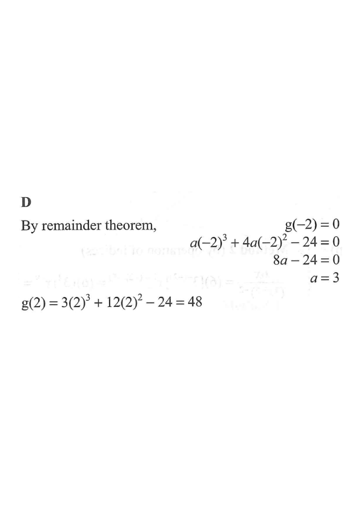

Remainder Theorem view of $g(x)=ax^{3}+4ax^{2}-24$
Scroll the solution to see the figure update step by step.
Let $g(x)=ax^{3}+4ax^{2}-24$, where $a$ is a constant. If $x+2$ is a factor of $g(x)$, then $g(2)=$

Since $x+2$ is a factor of $g(x)$, we have
$$g(-2)=0.$$
That is, substituting $x=-2$ into $g(x)=ax^{3}+4ax^{2}-24$ gives zero.
$$a(-2)^{3}+4a(-2)^{2}-24=0$$
$$-8a+16a-24=0$$
$$8a-24=0$$
$$a=3.$$
With $a=3$,
$$g(x)=3x^{3}+12x^{2}-24.$$
$$g(2)=3(2)^{3}+12(2)^{2}-24$$
$$=3(8)+12(4)-24$$
$$=24+48-24=48.$$
Therefore $g(2)=48$, which corresponds to option D.